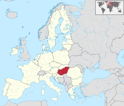
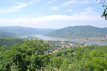
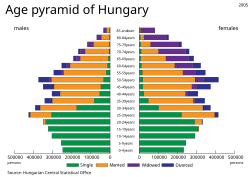
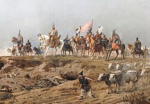
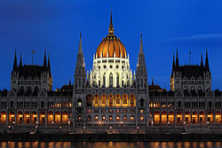

Vamos falar sobre a Hungria.
Contextualização
A Hungria (em húngaro: Magyarország) é um país localizado na Europa Central, especificamente na Bacia dos Cárpatos. Faz fronteira com a Eslováquia ao norte, Romênia ao leste, Sérvia ao sul, Croácia a sudoeste, Eslovênia a oeste, Áustria a noroeste e Ucrânia a nordeste. A capital do país é a cidade de Budapeste. A Hungria é membro da União Europeia, da OTAN, da OCDE, do Grupo de Visegrád e do Espaço Schengen. A língua oficial é o húngaro, que é a língua não indo-europeia mais falada na Europa.
Após séculos de sucessiva ocupação de celtas, romanos, hunos, eslavos, gépidas e ávaros, a Hungria foi fundada no final do século IX pelo grão-príncipe húngaro Arpades durante o Honfoglalás ("conquista da pátria"). Seu bisneto Estêvão I subiu ao trono no ano 1000, quando converteu o país para um reino cristão. Até o século XII, a Hungria era uma potência média no mundo ocidental, alcançando seu auge no século XV.[10] Após a Batalha de Mohács, em 1526, e de cerca de 150 anos sob ocupação otomana (1541-1699), a Hungria ressurge sob o domínio dos Habsburgos e, mais tarde, formou uma parte significativa do Império Austro-Húngaro (1867-1918).
Geografia
Relevo
A maior parte do país é composta por planícies, que não chegam a 200 m de altitude. Em alguns pontos existem pequenas cadeias de montanhas, mas as que passam de 300 metros de altura são apenas 2% do território húngaro. O ponto mais alto é a montanha Kékes com 1 014 metros e está localizada a nordeste de Budapeste. O ponto mais baixo é nas proximidades de Szeged no sul, em uma depressão com 77,6 metros.
Os maiores e mais importantes rios que cruzam a Hungria são o Danúbio e o Tisza. O Danúbio é um dos rios mais importantes da Europa e, na Hungria, ele é navegável por 418 quilômetros. O Tisza é navegável por 444 quilômetros. Vale ainda ressaltar o lago Balaton, que com uma área de 592 km² é o maior lago da Europa Central e Oriental, e até é conhecido por "mar Húngaro". Outros lagos menores são o Velence e o Neusiedl, que tem 315 km² de superfície, mas apenas 75 km² em território húngaro (o restante localiza-se na Áustria).
Clima
A Hungria possui um clima temperado continental,[27] com um frio e úmido inverno e um verão quente. A temperatura média anual é de 9,7 °C (com extremos de 42 °C e -29 °C).[28] A média pluviométrica é de 600 mm por ano. As chuvas são irregulares, caindo mais à oeste do Danúbio do que ao leste. Uma pequena vila, próxima de Pécs, tem um clima diferente do resto do país, semelhante ao clima mediterrâneo, o que é um diferencial na região.
Durante os anos 1980, a Hungria começou a sentir os efeitos da poluição das indústrias e dos agrotóxicos nas plantações. Continuamente foram relatados contaminações em reservatórios de água e uma sensível mudança na fauna. Até hoje, não foi feita nenhuma grande mudança sobre o meio ambiente.[29]
Demografia
Para 94% da população, na sua maioria composta por húngaros, a língua utilizada é o húngaro, uma língua fino-úgrica distantemente relacionada com o finlandês e o estoniano.
Existem muitas minorias étnicas na Hungria: ciganos (2,1%), alemães (1,2%), eslovacos (0,4%), croatas (0,2%), romenos (0,1%), ucranianos (0,1%) e sérvios (0,1%).[30]
Devido à sua história, quando países vizinhos faziam parte do mesmo país, existem minorias húngaras significativas em países vizinhos como Romênia (na Transilvânia), Eslováquia, Sérvia (em Voivodina), Ucrânia, Croácia (na Eslavônia) e Áustria. A Eslovênia, no entanto, tem um número muito grande de húngaros nas cidades próximas à fronteira e até adota o húngaro como língua oficial.
| Posição | Localidade | Condado | População |
|---|---|---|---|
| 1 | Budapeste | Budapeste | 1.696.128 |
| 2 | Debrecen | Hajdú-Bihar | 204.124 |
| 3 | Miskolc | Borsod-Abaúj-Zemplén | 172.637 |
| 3 | Miskolc | Borsod-Abaúj-Zemplén | 172.637 |
| 4 | Szeged | Csongrád | 164.883 |
| 5 | Pécs | Baranya | 156.649 |
| População total da Hungria: | 9,592 milhões | ||
História da hungria
Para 94% da população, na sua maioria composta por húngaros, a língua utilizada é o húngaro, uma língua fino-úgrica distantemente relacionada com o finlandês e o estoniano. O governo húngaro, que era autônomo mas obedecia às mesmas regras que a Áustria, deu início a um processo de marginalização das populações de outras etnias, o que motivou o nacionalismo sérvio, eslovaco e romeno dentro do reino. A marginalização continuou até o término da Primeira Guerra Mundial, quando todo o Império Austro-Húngaro desmoronou. Em novembro de 1918, a Hungria tornou-se uma república independente. Após uma experiência comunista sob Béla Kun, que proclamou uma república soviética húngara, e uma invasão por tropas romenas, forças militares de direita sob o comando do Almirante Miklós Horthy, entraram em Budapeste e instalaram um novo governo. Em 1920 elegeu-se uma assembleia unicameral, expressivamente de direita, Horthy foi indicado Regente e a Hungria voltou a ser uma monarquia, embora sem rei designado.[20]
Governo e política
O Presidente da República, eleito pela Assembleia Nacional da Hungria a cada 5 anos, é o comandante-chefe das forças armadas e nomeia o primeiro-ministro, cujo nome também deve ser aprovado pela Assembleia. O primeiro-ministro é quem seleciona o gabinete de ministros e, segundo a constituição húngara, dispõe da prerrogativa de demiti-los. Os indicados devem ser formalmente nomeados pelo presidente.
A Assembleia Nacional (Országgyűlés) - o parlamento húngaro - é um órgão legislativo unicameral, com 386 membros eleitos diretamente. Na última eleição, 176 foram eleitos pelo voto direto dos distritos eleitorais, 152 pela representação proporcional do partido e 58 pelo votos de compensação. Num primeiro turno, os eleitores votam em um candidato e também em um partido. O candidato que obtiver mais de 50% dos votos do distrito eleitoral ocupa um assento na assembleia. Quando no distrito não houver a maioria ou a participação for menor que 50%, há segundo turno. este ocorre da mesma forma que o primeiro, mas o candidato mais votado assume o cargo. É declarada inválida a eleição que não obtiver 25% de participação, sendo esses assentos preenchidos com os votos de compensação. A distribuição dos votos de compensação é feita pela ordem de votação dos partidos.[33] Na Hungria, dois partidos dominam o cenário eleitoral: o Magyar Polgári Szövetség ("União Cívica Húngara"), ou Fidesz,[34] e o Magyar Szocialista Párt ("Partido Socialista Húngaro"), ou MSzP.[35]